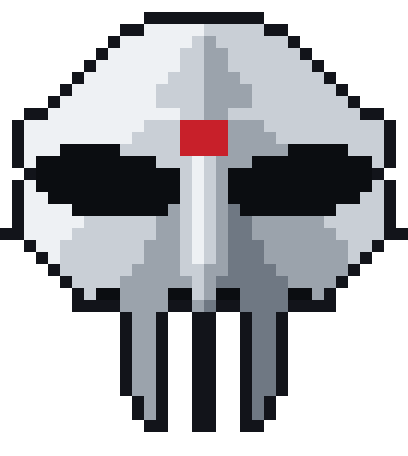
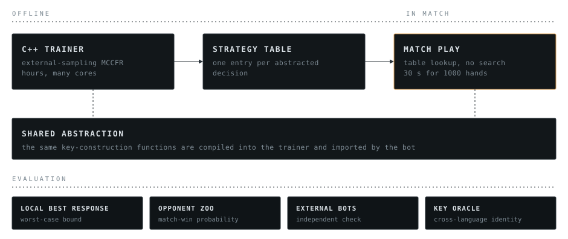

Heads-up no-limit poker · MIT Pokerbots 2027
The competition announces its game variant in early January and allots each bot 30 seconds of compute for 1000 hands. The variant is not known before the announcement, so this is a platform rather than a single bot: one training and evaluation pipeline that can be pointed at any variant the competition engine's interface admits.
The strategy is computed offline. A C++ trainer approximates equilibrium play with Monte Carlo counterfactual regret minimization and writes a table holding one strategy per abstracted decision. During a match the bot maps the current state into that abstraction and reads the stored response, so a decision costs a table lookup and no search runs at the table.
The abstraction has one implementation. The same key-construction functions are compiled into the trainer and imported by the Python bot, so the state the trainer learned and the state the bot looks up are the same state.

Evaluation is built as its own subsystem rather than a final step. Four instruments, covering different failures.
A lower bound on how much a worst-case opponent could win.
Match-win probability across a parameterised spread of styles.
Bots this project did not write, which is the only check on overfitting to its own.
Confirms trainer and bot derive identical keys from identical states.
Step through a match hand by hand: hole cards, board, betting, pot and stacks.
Drop an engine gamelog.txt onto it. One file, no build step, no
dependencies.
Kuhn poker is a three-card game small enough to have a known exact solution, which makes it the standard correctness check for an equilibrium solver. The page runs counterfactual regret minimization in the browser, converges to that solution from scratch, and then deals you hands against the strategy it just derived. It is textbook material and describes nothing about the competition entry.
Run the solver →The game interface confines dealing, hand ranking and betting structure to one place. The solver, the abstraction and the evaluation code are variant-independent, and five variants are implemented behind the interface as a readiness check.